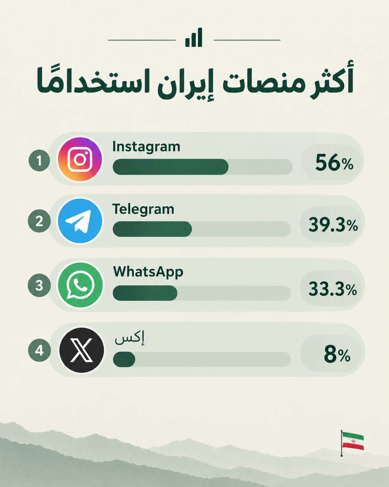

حسب مؤسسة گمان الإيرانية بهولندا التي قد نشرت تقريرًا بعنوان "نظرة الإيرانيين إلى وسائل الإعلام 2023" الذي شمل 38,445 ألف إيراني 96% داخل إيران فإن 80% من الإيرانيين يستعملون الإنترنت، ووفقًا لاستطلاع أجرته وكالة استطلاع الطلاب الإيرانيين (ISPA) في سبتمبر 2024، ونقلته Iran International، كان Instagram المنصة الأكثر شعبية بين عموم السكان في إيران بنسبة 56%، يليه Telegram بنسبة 39.3% وWhatsApp بنسبة 33.3%، فيما جاءت منصة إكس بنسبة استعمال ضئيلة ومحدودة لا تتعدى 8%. (UK Home Office, 2025

والسؤال الذي يلوح لنا في ظل هذه الحرب النفسية الإعلامية على المملكة العربية السعودية: ما دلالات انتشار حسابات إيرانية متنكرة بلغة عربية ومظهر سعودي على إكس؟
إذا كنّا نعلم بأن الإيراني البسيط لا يعتمد على إكس مصدًرا لتلقي الأخبار والمعلومات، فنحن أمام تفسير واحد مؤكد بأن هناك تنظيمًا مخططًا له من جهات ما لإختراق وحدة الصف السعودي باختيار أكثر منصات السعوديين استخدامًا «إكس».
ما يعني أن هذه الحرب قد امتدت من الأرض العسكرية إلى الحرب النفسية والإعلامية وبشكل منظم، فلما قد فشلت تنظيماتهم الميدانية حوّلوها إلى حرب نفسية وإعلامية هدفها نشر الشائعات وبث الفتنة والفرقة في الصفوف وزعزعة الأمن والثقة والفوضى في المجتمع السعودي.
غير أن محاولتهم هذه هي الأخرى قد خابت؛ لأن المجتمع السعودي وبوعي فائق كشف الألعوبة ومن أول ظهور لها، وراح يهجم هجمات مرتدة ضد تلك الحسابات.
الخلاصة:
يظهر من التقرير استحالة أن تكون تلك الحسابات الإيرانية المعادية على إكس نامية عن عشوائية أو صادرة من إيراني عادي بل هي منظمة ومستهدفة وموجهة، في حرب إعلامية ونفسية يتصدى لها الشعب السعودي ببسالة وقوة وذكاء.
مرجع
گمان. (۱۴۰۲). گزارش نظرسنجی «نگرش ایرانیان به رسانهها ۱۴۰۲». گروه مطالعات افکارسنجی ایرانیان (گمان). https://gamaan.org/fa/2023/09/05/media-survey-1402/
UK Home Office. (2025). Country policy and information note: Social media, surveillance and sur place activities, Iran. GOV.UK.
— شروق المحمادي
💬 تعليقات المسافرين
كن أول من يحلّق ✈️